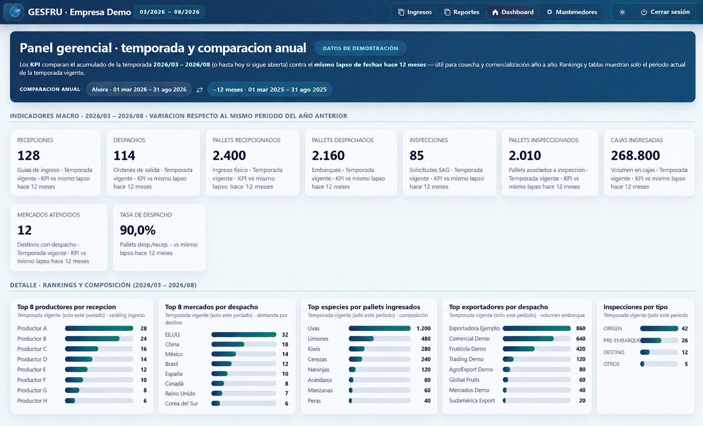
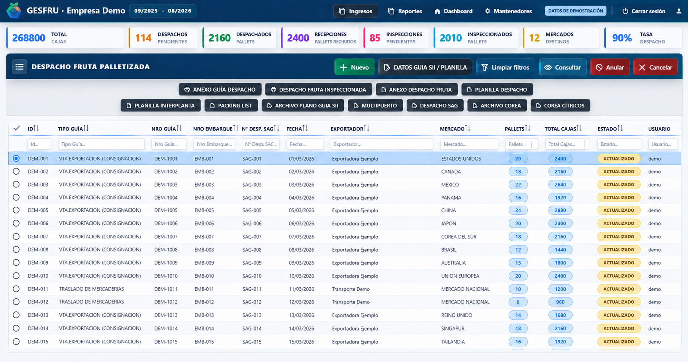
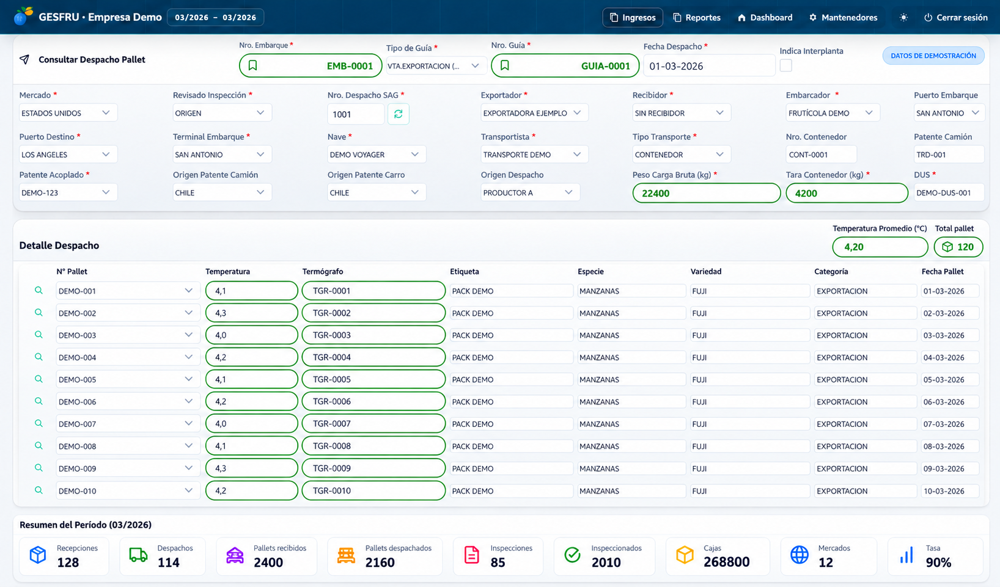

Sigue la fruta
en cada etapa.
Relaciona recepciones, pallets, inspecciones y movimientos para consultar la historia de la operación.
- Recepción y control
- Packing e inventario
- Pallets e inspecciones
MS Tecnología presenta · GESFRU
GESFRU conecta la operación desde la recepción de la fruta hasta su despacho y exportación. Lo adquieres para tu empresa, lo adaptas cuando lo necesitas y construyes sobre un producto que ya es tuyo.
Conoce el modelo de propiedadLo compras Lo adaptas Es tuyo
Tu operación. Tu sistema. Tu evolución.
Una operación frutícola, un solo sistema
GESFRU reúne los datos y etapas que hoy pueden estar repartidos entre planillas, documentos y herramientas separadas.
Relaciona recepciones, pallets, inspecciones y movimientos para consultar la historia de la operación.
Centraliza despachos, mercados, documentación y antecedentes de carga.
Consulta indicadores, volúmenes y estados desde una visión común de la operación.
GESFRU en acción
GESFRU parte de una base funcional para la gestión frutícola. La entrega se define para tu operación y puede evolucionar después con módulos, integraciones y mejoras solicitadas por tu empresa.

Consulta recepciones, despachos, volúmenes y mercados para seguir la actividad y orientar tus decisiones.

Filtra guías, revisa estados y accede a los documentos del proceso desde el listado de despachos.

Reúne la información logística y los pallets asociados, con especie, variedad y antecedentes de la carga.
Vistas adaptadas de GESFRU. Empresas, identificadores y cifras ficticias para proteger la información de la operación.
Un producto propio, con continuidad asegurada
GESFRU no se entrega como un arriendo indefinido por derecho de uso. Tu empresa adquiere el producto bajo las condiciones definidas en la propuesta y el contrato.
Después puedes solicitar cambios sobre esa misma base, sin comenzar nuevamente ni depender de una plataforma que nunca pasa a ser tuya.
La propuesta define alcance, entrega, accesos, documentación y condiciones de propiedad.
Nuevos módulos, integraciones y mejoras se cotizan por separado sobre tu producto.
El plan anual cubre hosting, mantención operativa, respaldos y continuidad de la base de datos.
De GESFRU a tu operación
Partimos desde GESFRU y definimos cómo debe configurarse, entregarse y evolucionar para responder a tu operación.
Revisamos procesos, usuarios, datos y puntos de control de tu operación frutícola.
Definimos configuración, alcance, accesos, documentación y condiciones comerciales antes de comenzar.
Configuramos GESFRU, preparamos la información y acompañamos el inicio de la operación.
Los nuevos módulos, integraciones y mejoras se incorporan cuando tu empresa decide avanzar.
Compra una vez. Construye sobre lo que ya es tuyo.
La adquisición e implementación de GESFRU es una inversión inicial. Las personalizaciones se cotizan solo cuando las solicitas y el cobro anual corresponde a la continuidad operativa del sistema.
Agendar una demo de GESFRU ↗01 Sin arriendo por derecho de uso
02 Base sobre la cual seguir construyendo
03 Personalizaciones opcionales
04 Continuidad anual separada
Tres conceptos. Costos claros.
Sabes qué estás comprando, qué servicios operativos se renuevan y qué mejoras se cotizan únicamente cuando tu empresa decide avanzar.
La anualidad mantiene GESFRU operativo y protegido; no es un cobro por el derecho a seguir usando el producto que adquiriste.
Producto, configuración, puesta en marcha y entrega según el alcance acordado.
Módulos, integraciones y mejoras se cotizan por separado cuando tu empresa los necesita.
Hosting, mantención operativa, respaldos y continuidad de la base de datos, según las condiciones del plan.
El pago anual corresponde a servicios operativos; no es una licencia ni un arriendo de GESFRU.
La propuesta y el contrato detallan la versión adquirida, los entregables, accesos, documentación y las condiciones aplicables al código y a componentes de terceros.
No cobramos una licencia anual por derecho de uso. El pago anual corresponde a hosting, mantención operativa, respaldos y continuidad de la base de datos.
Sí. Los nuevos módulos, integraciones y mejoras se evalúan y cotizan por separado sobre la base de GESFRU que tu empresa ya adquirió.
Incluye los servicios operativos indicados en la propuesta: hosting, mantención, respaldos y continuidad de la base de datos. Las nuevas funcionalidades se cotizan por separado.
Agenda una demo
Cuéntanos cómo trabajan hoy y coordinemos una demo de GESFRU enfocada en sus procesos: recepción, inventario, pallets y despachos.
WhatsApp +56 9 9399 1036El mensaje ya está escrito. Solo revísalo y envíalo.